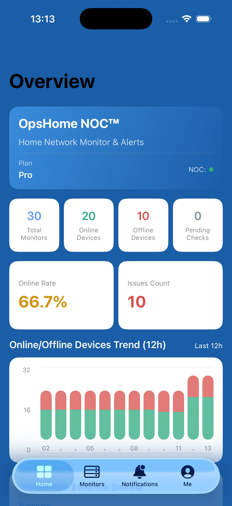
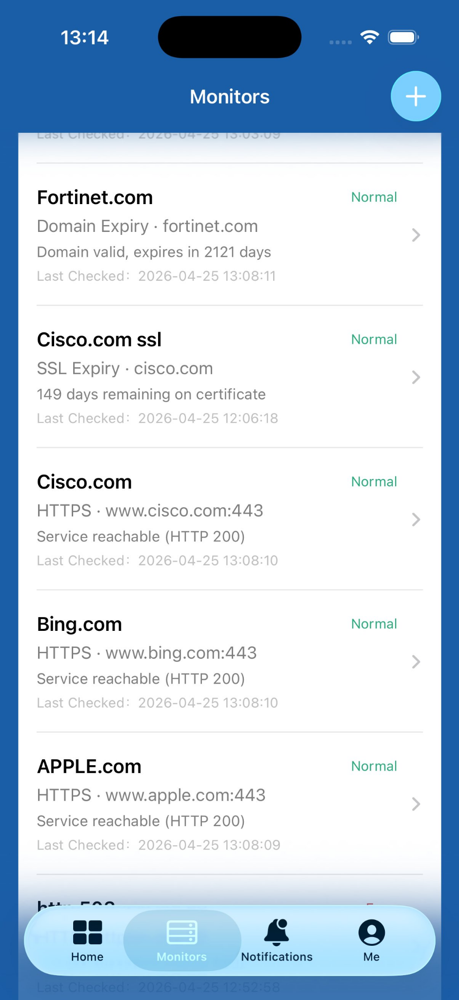
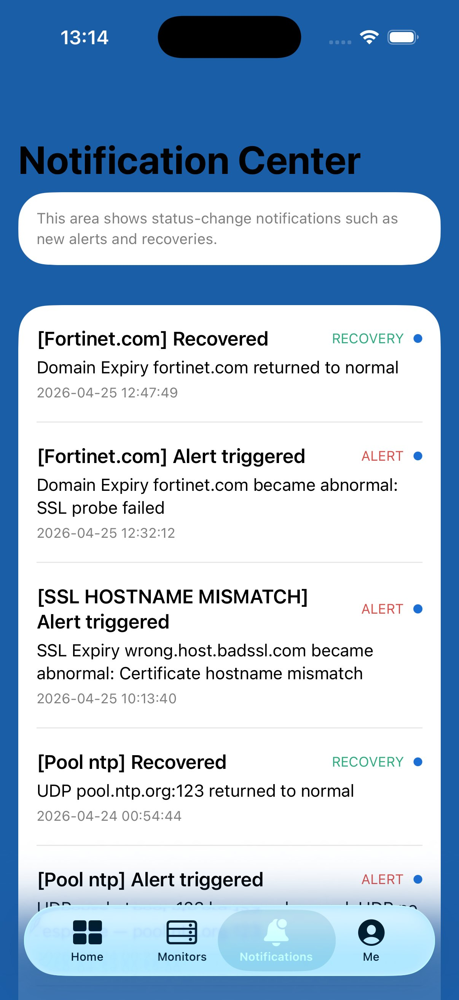
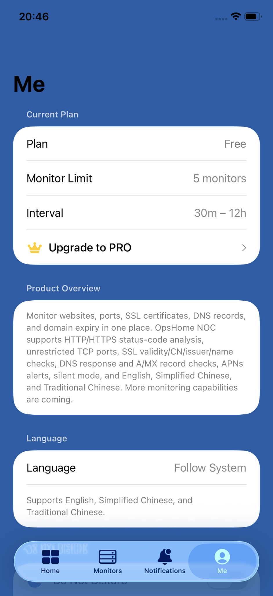

HOME NETWORK MONITOR & ALERTS家庭網路監控與告警
Know the moment your home server goes down.
External cloud probing and real push alerts to your iPhone, every time.
當你的家庭伺服器或個人網站異常時，立即知道。
透過外部雲端主動檢測，並將告警即時推送到 iPhone。
// WHAT IT DOES// 核心功能
OpsHome NOC doesn't just tell you something is down — it tells you why, and what to do next.OpsHome NOC 不只告訴你服務異常，也協助你理解原因與下一步處理方向。
Get notified the moment your service goes down or recovers. Powered by APNs, delivered directly to your iPhone in real time.服務異常或恢復時即時收到通知。透過 APNs 直接推送到你的 iPhone。
APNsEvery check result comes with a human-readable analysis. Free includes a Basic report; Pro unlocks the Full report with more detailed suggestions.每次檢測結果都提供易讀分析。Free 包含基礎版分析報告；Pro 解鎖更完整的分析與建議。
KB-DRIVENAt-a-glance summary: online rate, active alerts, recent recoveries, and a 12-hour uptime trend chart for your entire homelab.快速掌握在線率、目前告警、近期恢復，以及整體 12 小時狀態趨勢。
12H TREND CHARTTrack SSL certificate validity. Free includes status monitoring; Pro users also get proactive expiry reminders before certificates lapse.監控 SSL 憑證有效性。Free 可查看狀態；Pro 額外提供憑證到期前提醒。
AUTO MONITORWhen you switch to App Switcher or background, your monitor data is automatically covered. No accidental screenshot leaks.切換到 App 切換器或背景時，自動遮蔽監控資料，避免截圖外洩。
SECURITYOne-tap login. No email or password to manage. API keys and tokens are stored securely in iOS Keychain — never in UserDefaults.一鍵登入，無需管理信箱或密碼。API key 與 token 安全儲存在 iOS Keychain，不寫入 UserDefaults。
KEYCHAIN STORAGE// SUPPORTED PROTOCOLS// 支援的監控類型
Active probing from external cloud infrastructure. Your services are checked as an outside observer would — just like your users.透過外部雲端基礎設施主動檢測，以使用者視角確認你的服務是否可用。
| TYPE類型 | DESCRIPTION說明 | PLAN方案 |
|---|---|---|
| HTTP | Website reachability & status code detection (200, 400–505)網站可達性與狀態碼檢測（200、400–505） | FREEPRO |
| HTTPS | HTTPS reachability with certificate validation (200, 400–505)HTTPS 可達性與憑證驗證（200、400–505） | FREEPRO |
| TCP | IP + port connectivity checkIP 與 Port 連線檢測 | FREEPRO |
| SSL Expiry | SSL certificate remaining validity in daysSSL 憑證剩餘有效天數 | FREEPRO |
| ICMP (Ping) | Host reachability via Ping透過 Ping 檢測主機可達性 | FREEPRO |
| UDP | UDP port connectivity detectionUDP Port 連線檢測 | PRO ONLY |
| DNS | DNS resolution check (A record, MX record)DNS 解析檢測（A 記錄、MX 記錄） | PRO ONLY |
| DOMAIN | Track domain expiry date & alert before it lapses追蹤網域到期日，並在到期前提醒 | PRO ONLY |
// REAL APP SCREENSHOTS// App 實際介面
Every screen is built for clarity — know what's running, what's down, and what needs attention.每個畫面都以清晰為核心，讓你快速知道哪些服務正常、哪些異常、哪些需要注意。




// PRICING// 價格方案
Start free with alert push notifications included. Upgrade to Pro for expiry reminders and the full feature set. No hidden fees. No data sold.Free 也包含告警推播通知。升級 Pro 可取得到期提醒與完整功能。無隱藏費用，不販售資料。
FREE
forever永久免費
PRO
per month · or $19.99 / year (save 44%)每月 · 或 $19.99 / 年（省 44%）
// BUILT WITH CARE// 以隱私與安全為核心
Every detail is designed to keep your data safe and your homelab visible.每個細節都為保護你的資料與維持服務可見性而設計。